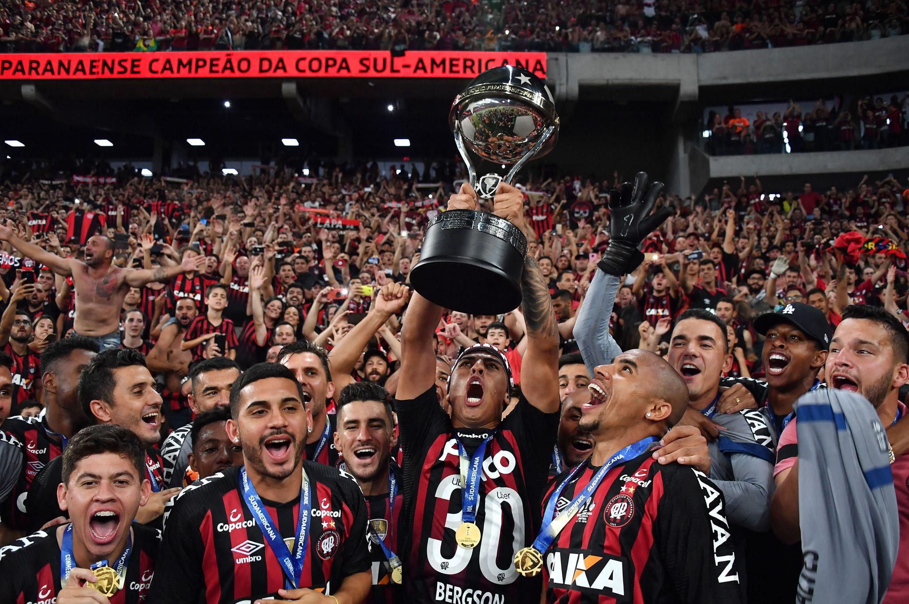
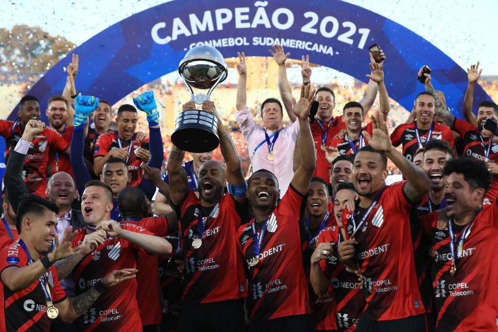

Fundação
Nasce o clube que se tornaria um dos símbolos do futebol paranaense.
Tradição, conquistas, superação e amor pelas cores vermelho e preto.
CONHEÇA NOSSA HISTÓRIAO Club Athletico Paranaense é um clube de futebol de Curitiba, no Paraná. Fundado em 26 de março de 1924, construiu sua história com títulos estaduais, nacionais e internacionais.
Conhecido como Furacão, o clube é reconhecido por sua torcida, pelas cores vermelho e preto e por investir na modernização de sua estrutura esportiva.

O Athletico Paranaense nasceu da união do Internacional Futebol Clube com o América Futebol Clube, em Curitiba, em 1924.
Com o passar das décadas, o clube conquistou espaço no futebol brasileiro e passou a representar uma das principais forças esportivas do Paraná.
Em 2001, o Furacão conquistou pela primeira vez o Campeonato Brasileiro da Série A. Em 2005 e 2022, chegou à final da Copa Libertadores da América.
Em 2018 e 2021, venceu a Copa Sul-Americana. Em 2019, conquistou a Copa do Brasil, ampliando sua galeria de títulos importantes.

Nasce o clube que se tornaria um dos símbolos do futebol paranaense.
O primeiro título do Campeonato Brasileiro da Série A.
O Furacão conquista seu primeiro título continental.
Uma conquista histórica na competição nacional.
O clube vence a Copa Sul-Americana pela segunda vez.
Os títulos representam momentos marcantes da trajetória rubro-negra e fazem parte da memória dos torcedores.
O Furacão chegou ao topo do futebol brasileiro.

O primeiro título continental do clube.

A segunda conquista da competição continental.

Um dos títulos mais importantes da história do Furacão.
O Athletico possui diversas conquistas estaduais ao longo de sua história.
A Copa Libertadores é uma das principais competições do futebol sul-americano. O Athletico chegou às finais em 2005 e 2022, demonstrando sua força no continente.
Essas campanhas entraram para a história do clube e marcaram gerações de torcedores.
Localizada em Curitiba, a Ligga Arena é a casa do Athletico. O estádio, conhecido historicamente como Arena da Baixada, passou por modernizações e recebeu jogos da Copa do Mundo de 2014.

Nos dias de partida, a Arena reúne torcedores para apoiar o time e transformar cada jogo em um momento especial.
Clique em cada posição para abrir a tabela de atletas. A numeração e a composição do elenco podem mudar durante a temporada.
| Camisa | Jogador | Idade | Nacionalidade |
|---|---|---|---|
| 1 | Mycael | — | Brasileira |
| 23 | Santos | — | Brasileira |
| 42 | Matheus Soares | — | Brasileira |
| 76 | Maksym Voronov | — | Ucraniana |
| Camisa | Jogador | Idade | Nacionalidade |
|---|---|---|---|
| 2 | Gilberto | — | Brasileira |
| 3 | Léo | — | Brasileira |
| 4 | Arthur Dias | — | Brasileira |
| 6 | Léo Derik | — | Brasileira |
| 12 | Gilberto Moraes | — | Brasileira |
| 22 | Carlos Terán | — | Colombiana |
| 25 | João Dantas | — | Brasileira |
| 26 | Claudinho | — | Brasileira |
| 29 | Gastón Benavídez | — | Argentina |
| 33 | Juan Felipe Aguirre | — | Colombiana |
| 36 | Arthur Monteiro | — | Brasileira |
| 37 | Lucas Esquivel | — | Argentina |
| 55 | Bruno Baldini | — | Brasileira |
| Camisa | Jogador | Idade | Nacionalidade |
|---|---|---|---|
| 5 | Felipinho | — | Brasileira |
| 8 | João Cruz | — | Brasileira |
| 10 | Bruno Zapelli | — | Argentina |
| 14 | Luiz Gustavo | — | Brasileira |
| 16 | Jadson | — | Brasileira |
| 17 | Alejandro García | — | Colombiana |
| 27 | Juan Portilla | — | Colombiana |
| 47 | Felipe Chiqueti | — | Brasileira |
| 53 | Dudu Kogitzki | — | Brasileira |
| 63 | Riquelme | — | Brasileira |
| Camisa | Jogador | Idade | Nacionalidade |
|---|---|---|---|
| 7 | Stiven Mendoza | — | Colombiana |
| 9 | Kevin Viveros | — | Colombiana |
| 18 | Kerwin Vargas | — | Colombiana |
| 19 | Jorge Rivaldo | — | Colombiana |
| 21 | Leozinho | — | Brasileira |
| 50 | Renan Viana | — | Brasileira |
| 70 | Renan Peixoto | — | Brasileira |
A tabela é informativa e deve ser conferida com as listas oficiais mais recentes. O símbolo “—” indica idade ainda não confirmada.
A torcida é parte fundamental da identidade do Athletico. O apoio nas arquibancadas acompanha o clube nos momentos de alegria e também nos desafios.

Ser atleticano é carregar as cores do Furacão, apoiar o clube e celebrar sua história.

O clássico entre Athletico e Coritiba é um dos confrontos mais tradicionais do Paraná.
Os confrontos com outras equipes paranaenses também fazem parte da história do clube.
Furacão é o apelido tradicional do clube.
O Athletico foi fundado na capital do Paraná.
A Arena da Baixada recebeu partidas da Copa do Mundo de 2014.
Vermelho e preto fazem parte da identidade do Furacão.
A trajetória do Athletico reúne conquistas, desafios, desenvolvimento esportivo e momentos que continuam inspirando novas gerações de torcedores.